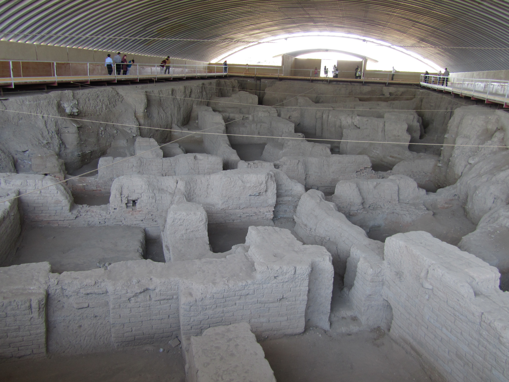

Ecbatana (Achmetha)

- Find Name
- Ecbatana (Achmetha)
- Description
- The capital of the Median kingdom and later a summer capital and treasury city of the Achaemenid and Parthian empires, at modern Hamadan on the slopes of Mount Alvand in western Iran, on the Royal Road between Mesopotamia and the Iranian plateau. Its identification with Hamadan is considered secure on historical and archaeological grounds, and the Nabonidus Chronicle records Cyrus's capture of the city and its treasures in 550 BC. But excavation has always been restricted because the modern city covers most of the ancient settlement: work on Hagmatana hill has produced column bases, capitals, and scattered Achaemenid objects, but the Median palace, the treasury, and the royal archive of Ezra 6:2 have not been identified as buildings. Ezra 6:2 is the city's only explicit biblical reference, naming it Achmetha, where the memorandum of Cyrus's temple decree was found.
- Historical Period
- Median to Sasanian, 7th century BC onwards
- Evidence Class
- Contextual
- Interpretations
- DOUBT STATED (thin excavation, per brief): the city identification (Hamadan = Ecbatana = Achmetha) is secure, but the visible remains are thin and the archive building of Ezra 6:2 is not identified; Herodotus's seven coloured walls are a Greek construction, not an excavated reality. Borderline rather than clear because the biblical link rests on the city's identity and function, not on an excavated structure.
- Alternative Names
- Achmetha (Ezra 6:2); Hagmatana; Hamadan
- Related Places
- Related Books
- Related Events
- Related People
- Scripture Illuminated
- Biblical Significance
- Ecbatana is where the search for Cyrus's decree ended: the archives of Babylon yielded nothing, but the record found at Achmetha in Media confirmed the exiles' right to rebuild. That single verse anchors the return from exile in a real imperial filing system — but the archive building itself has never been identified, so this entry stays borderline.
- Artifact Date
- Median capital from 7th century BC; Achaemenid summer capital, 6th-4th centuries BC
- Current Location
- In situ, beneath modern Hamadan, Iran (Hagmatana hill partly excavated; UNESCO World Heritage Site, 2024)
- Date Discovered
- Excavation begun 1913 under Charles Fossey; systematic work from 1983
- Discovery Location
- Hamadan, Iran
- Timeline Era
- Return and Second Temple
Awaiting Review Not yet checked against scholarly sources. Treat its claims as provisional until this entry is reviewed. About verification
Last reviewed: not yet reviewed